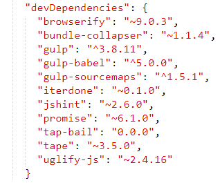

Hallo!
Dies ist eine Projektseite über den Lernprozess von Lua und das Game Framework Löve2d
Hallo!
Dies ist eine Projektseite über den Lernprozess von Lua und das Game Framework Löve2d
„Eine Einführung in die Vorteile und Nachteile über das Package Management im JavaScript und Lua Ökosystem.“
In jeder Programmiersprache braucht es eine Software für die Verwaltung von Code Stücken. Früher hat man mit ZIP umhergeschoben, aber heutzutage ist es wichtig ein Package Management zu besitzen für grössere Applikationen. Viele Hilfsmodule sind Open Source und es ist wichtig, diese einfach konsumieren zu können.
Ich habe schon Erfahrungen mit einem Package Manager gemacht im JavaScript Ökosystem. Im modernen JavaScript Version 6 kann man die Sprache auch im Server Bereich einsetzen. Server-Side JavaScript hat in 2011 begonnen, und hat in den folgenden Jahren sehr popularisiert. Es war der Beginn, die Skriptsprache JavaScript zu modernisieren. Damit kam auch NPM der für Node Package Manager steht. Dort konnte ich sehr viel über Versionierung lernen.
Kleine modulare Teile können von Drittentwickler gebraucht werden. Diese sind meist gut getestet und machen nur eine Sache gut (Unix Philosophie)
Versionierung vereinfacht die Wartung von den etlichen Modulen. Sogenannte Semver Ranges versichern, dass man Updates bekommt, diese aber den existieren Code nicht beschädigen (Non-Breaking Changes)
Durch
eine Metadatenfile kann der Package Manager die „Dependencies“
einfach auflösen und installieren. Das Ziel ist es, einer
Person den Code mit dem Metadatenfile zu schicken und er kann die
Dependencies problemlos installieren.

Abbildung : Beispiel Metadatenfile
Einen Nachteil den ich manchmal immer wieder sehe, sind die sogenannten Auflösungsfehler. Das passiert wenn zwei Module auf das gleiche Package verweisen aber mit einer anderen Versionsnummer. Man kann unterscheiden zwischen „peerDependencies“ und „Dependencies“. „peerDependencies“ gibt nicht die genaue Abhängigkeit ab sondern bestimmt einfach, dass der Benutzer des Moduls diese Version mitinstallieren soll. Dies hat den Vorteil dass der Code nicht komplett dupliziert wird aber den Nachteil, nur eine Version benutzen zu können im ganzen Projekt.
In Lua gibt es auch einen Package Manager namens LuaRocks. Das war mein Ziel eine etwas andere Perspektive zu gewinnen und wie andere Programmiersprachen dieses Problem angehen.
Mit LuaRocks kann man das ganze Projekt auch ausführen und „builden“. Da Lua nicht auf dem Web aufbaut, hat jedes Modul seinen eigenen Kompilierungsschritt. Dies ist etwas aufwendig für Beginner und braucht eine gewisse Lernkurve zu überwinden.
Ich habe kleine Packages installiert und diese ausprobiert. Installation war ziemlich einfach: ein einfach luarocks install installiert das Modul:
Wichtig ist der optionale Parameter –save der das Modul in das Metadatenfile einfügt.
|
Wort |
Beschreibung |
|
Dependencies |
Abhängigkeiten von Modulen |
|
Metadatenfile |
Ein File welches Informationen über die Software enthält |